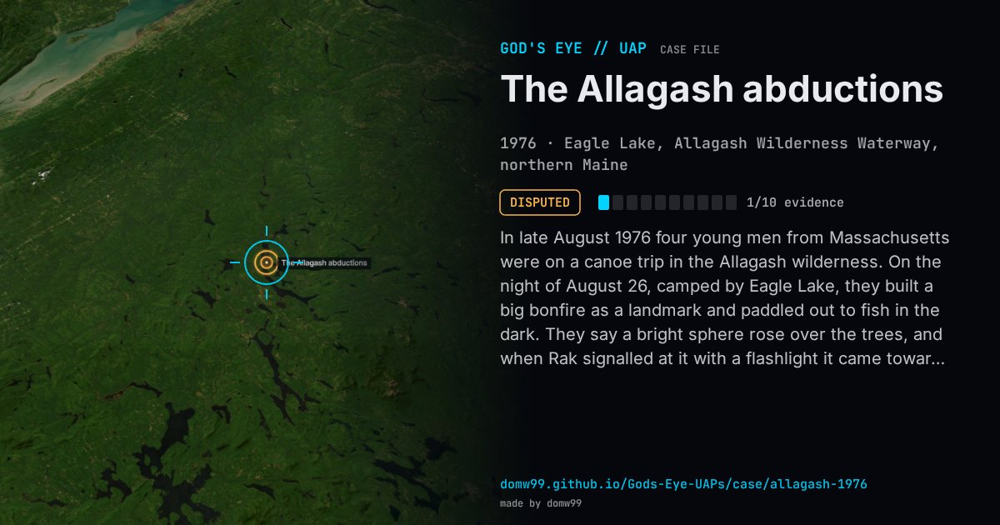

The Allagash abductions

In late August 1976 four young men from Massachusetts were on a canoe trip in the Allagash wilderness. On the night of August 26, camped by Eagle Lake, they built a big bonfire as a landmark and paddled out to fish in the dark. They say a bright sphere rose over the trees, and when Rak signalled at it with a flashlight it came toward them and shone a beam down on the water; the next thing they knew they were back on the shore, and the fire that should have burned for hours was embers. Years later the ufologist Raymond Fowler took up the case, and under hypnosis all four described being taken aboard and examined. Fowler’s 1993 book The Allagash Abductions made it one of the best-known abduction cases, and one of the few claimed by a whole group.
Explanation
The abduction rests on memories recovered under hypnosis years later, a method that is known to produce false memories. The four agree that they saw a bright light over the lake and that their fire had burned down sooner than they expected; the rest is in dispute. In 2016 Chuck Rak said the abduction “didn’t happen”, that he had backed the story to make money and that they had been “stoned” on the lake; Charlie Foltz and Jim Weiner deny the drugs and stand by it.
What was seen
Shape: A large glowing sphere that changed colour and shone a beam on the water
Witnesses: Jim and Jack Weiner and Chuck Rak, art students, and their guide Charlie Foltz
Duration: Minutes as they remember it; hours by the fire
Sources
- The County (Houlton, Maine), “How much of a famed 1976 UFO abduction is true?” (2016)
- Boothbay Register — The Allagash Abductions
Browse
- United States
- 1970s
- Disputed
- Close encounters
- Many independent witnesses
- Lights and fireballs
- Spheres and orbs